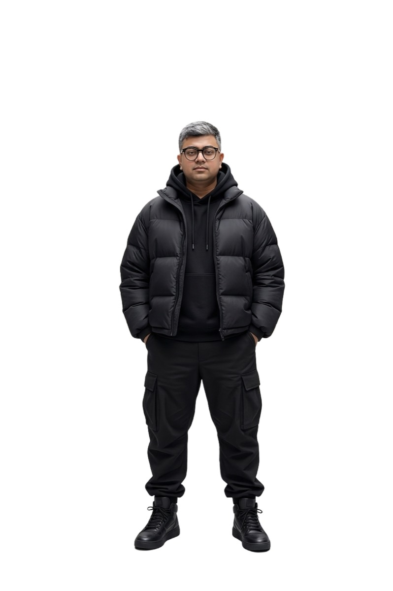
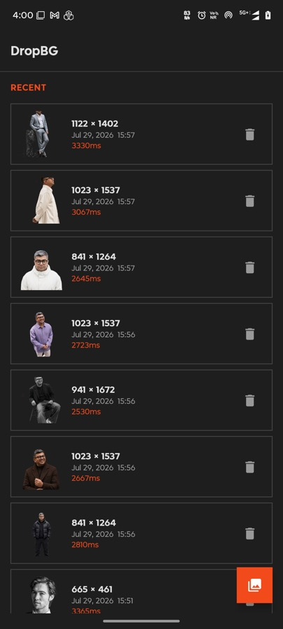
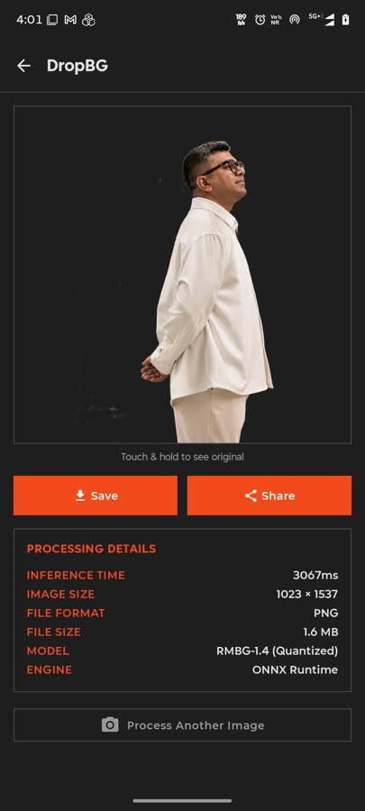
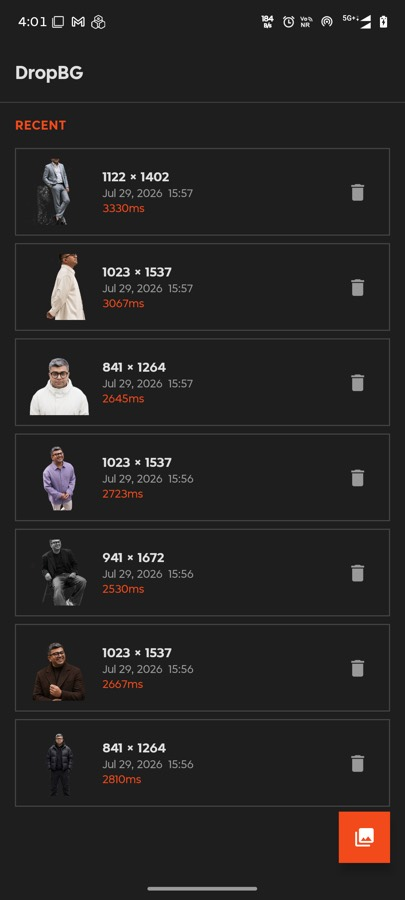

DropBG: cutting out backgrounds without sending anyone your photos
Every background remover wants your image on their server and your card on file. This one is 42 MB, runs on the phone in about a second, and costs nothing.

Background removal is one of those tasks that got quietly good a couple of years ago and then got quietly monetised. The tools that work well are web services: upload, wait, get a watermarked preview, pay to download it at full resolution. The free ones cap you at a few images a day.
None of that is a technical necessity. The models that do this are small. RMBG-1.4 quantised to ONNX is 42 MB — smaller than most games' splash screen assets. It runs on a phone CPU in about a second. The upload step exists because it's where the business model lives, not because the phone can't do it.
So DropBG does it on the phone.
The numbers
| Metric | Value |
|---|---|
| Model (quantised ONNX) | 42 MB |
| Model load, cold | ~1–3 s |
| Inference at 1024×1024 | ~1–2 s |
| APK (debug) | 88 MB |
| Minimum | Android 8.0, API 26 |
That's on a mid-range arm64 device. Compared to Footprints — my 507 MB language model experiment — this one is almost polite.
How it works
The model is a segmentation network. It takes an image and returns a single-channel mask: for every pixel, how confident it is that the pixel belongs to the foreground. Everything else is plumbing.
BackgroundRemover.kt does this:
- Decode the picked image, then fix its EXIF orientation (more on that below).
- Resize to 1024×1024 and normalise each channel to roughly
-0.5..0.5, laid out as a planar1×3×1024×1024tensor. - Run it through ONNX Runtime with 4 intra-op threads.
- Normalise the raw output to
0..255and build a greyscale mask bitmap. - Scale the mask back up to the photo's real dimensions.
- Draw the original, then composite the mask with
PorterDuff.Mode.DST_IN.
That last step is the neat one and it's pure Android, no ML involved. DST_IN keeps the destination pixels only where the source has alpha — so drawing a greyscale mask over the photo in that mode punches the background out to transparency in a single hardware-accelerated canvas operation. No per-pixel alpha loop. The graphics stack has done this since forever; it just isn't the first tool people reach for.
Why the mask is normalised rather than thresholded. The model's raw output isn't bounded, so the engine finds the min and max and rescales into 0..255. That keeps the intermediate values instead of forcing every pixel to fully-in or fully-out — which is what gives you soft edges on hair and fur rather than a cardboard cutout.
EXIF orientation, the bug that gets everyone
Phone cameras frequently store the sensor image unrotated and record the intended rotation in an EXIF tag. BitmapFactory.decodeStream ignores that tag entirely.
So without correction, a portrait photo arrives sideways. The model then does its job perfectly on a sideways image, and you get a beautifully segmented result that's rotated 90 degrees. It looks like a model failure and it isn't one.
correctOrientation() reads the tag and applies a Matrix before anything else touches the bitmap — all eight cases, including the flips and transposes nobody remembers exist. Boring code, and the difference between a working app and a confusing one.
The app



A sealed class UiState drives everything — Idle, ImageSelected, Processing, Done, Error — which means the UI can't get into a state the ViewModel didn't intend. For an app whose core action is a slow async operation that can fail, making the states explicit and exhaustive was worth more than any other structural decision.
The before/after toggle is instant because both bitmaps are already in memory. Save writes to the gallery, share opens the system sheet. That's it.
What it's bad at
Fine hair against a busy background still produces halos. Semi-transparent objects — glass, smoke, veils — confuse it, because the model outputs one confidence value per pixel and genuine transparency isn't really representable that way. Very small subjects lose detail to the 1024×1024 downscale.
The cloud tools are better at these edge cases, and they're better because they run much larger models on much larger hardware. I'm not going to pretend otherwise. What I'll claim is that for the ordinary case — a person, a product, a pet, reasonably lit — the difference is small enough that the privacy and the zero cost win comfortably.
The wider point
DropBG took a weekend, and most of that was UI. The model already existed, ONNX Runtime already runs on Android, and the compositing is a stock canvas call.
That's the part worth noticing. A whole category of paid web service is, technically, a 42 MB file and a few hundred lines of Kotlin. The infrastructure isn't the hard part any more — it hasn't been for a while.
← All posts